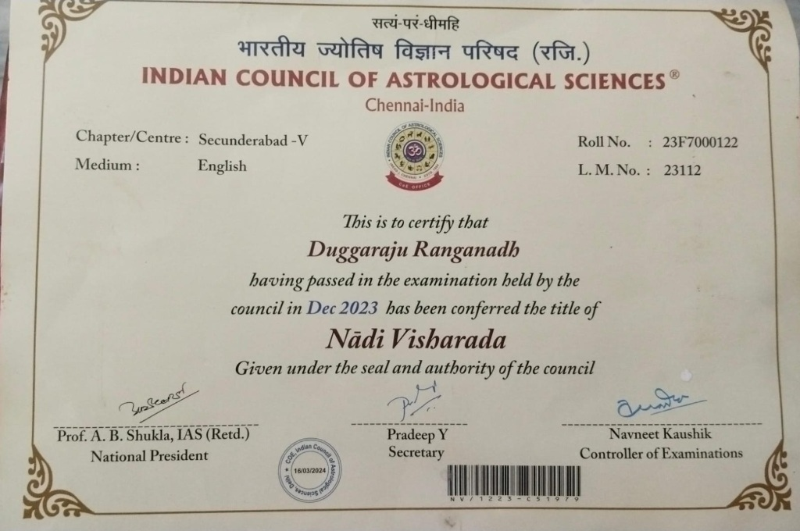
Nadi Visharada Certificate
Conferred by Indian Council of Astrological Sciences (ICAS) under National President Prof. A.B. Shukla, IAS (Retd.).
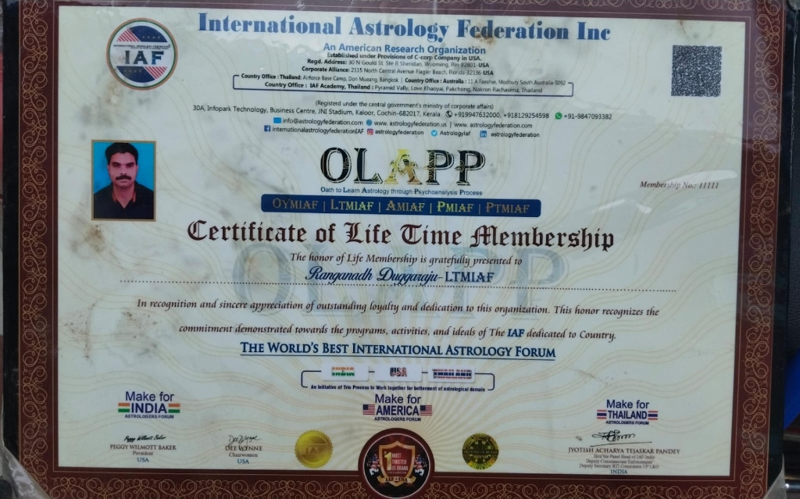
IAF Life Time Membership Certificate
Conferred by International Astrology Federation Inc. (USA) & OLAPP for excellence in astrology.
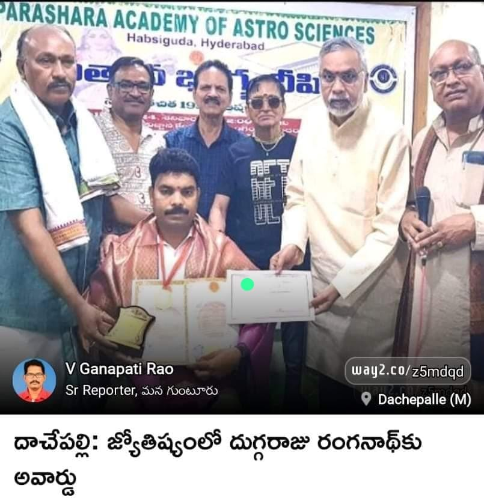
Doctorate Award in Astrology
Conferred by Ram Prasad (IFS) & Parashara Academy at Sundarayya Vignana Kendram, Hyderabad.
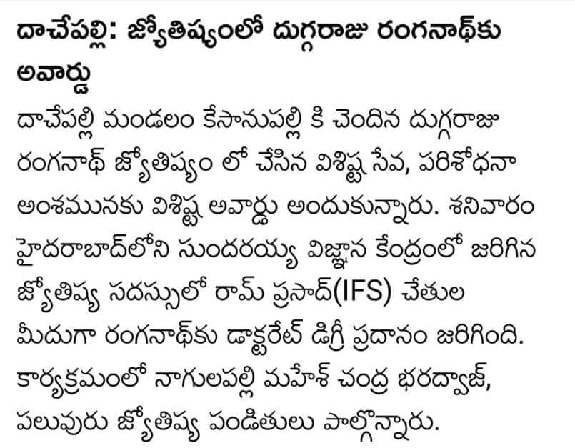
Media Recognition & Honors
Press coverage recognizing Dr. Rannganadh Sarma's research and service in Vedic astrology.
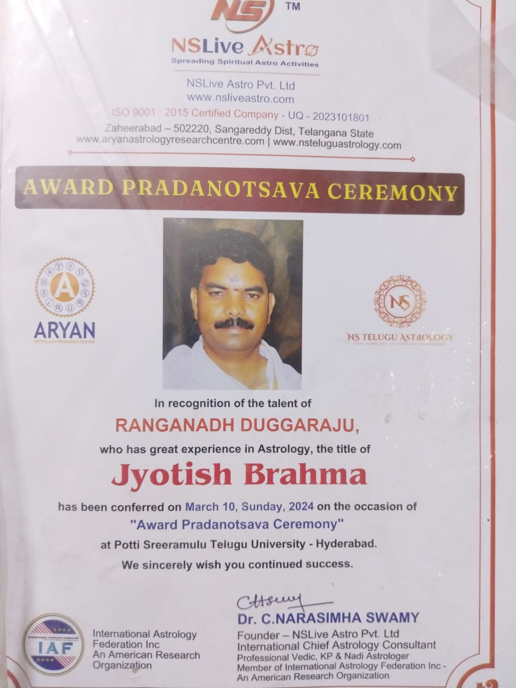
Vedic Astrology Felicitation
Honored among senior scholars and astrologers for dedicated contributions.
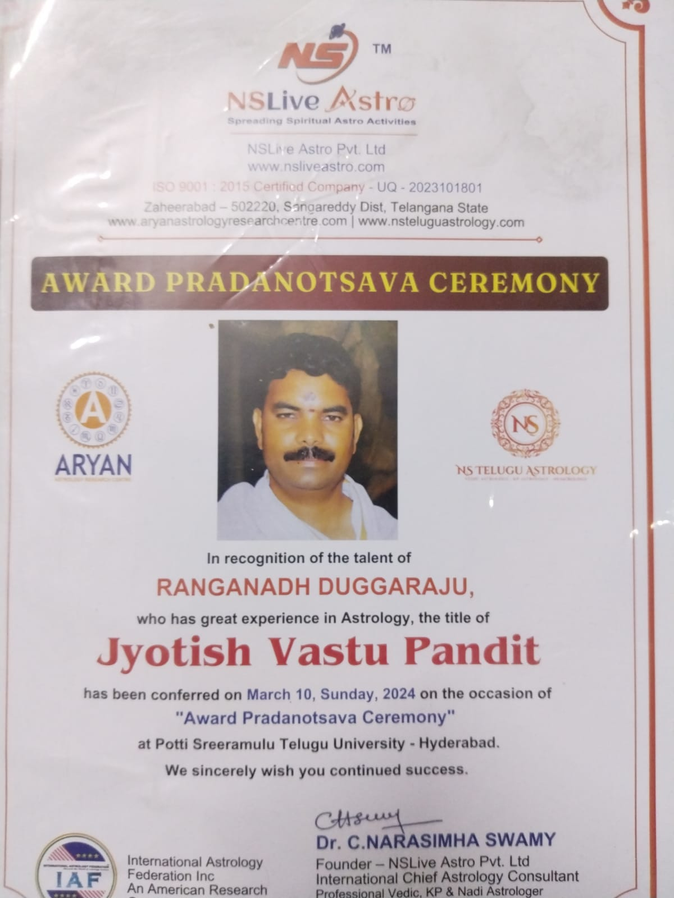
Astrology Conference & Meet
Distinguished presence at state Vedic astrology conventions.
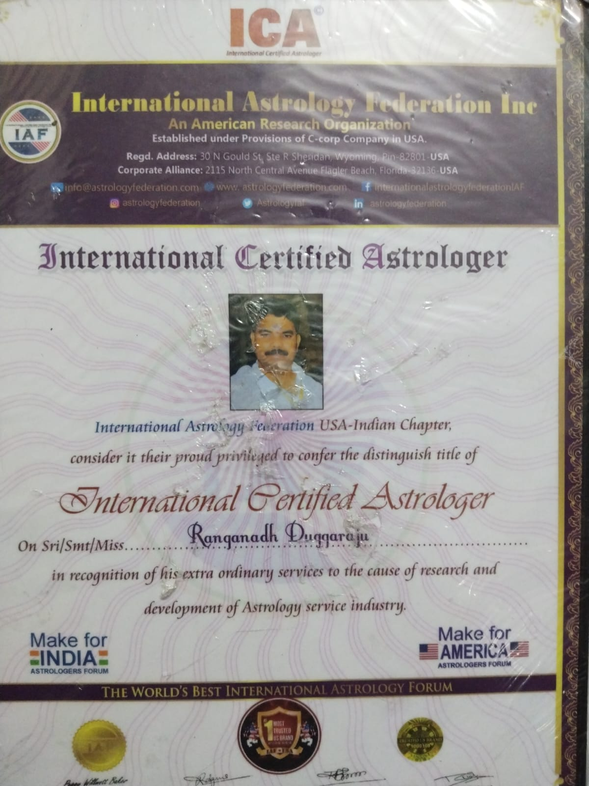
Sacred Recognition
Felicitation for excellence in birth chart analysis and remedial guidance.
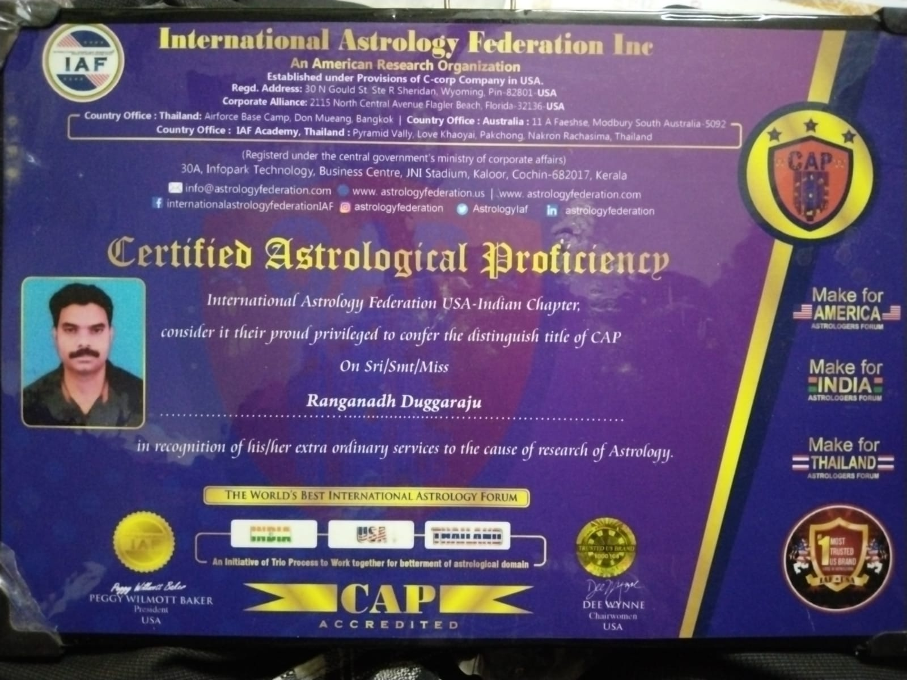
Scholar Recognition
Special honors presented at Hyderabad astrological convocation.
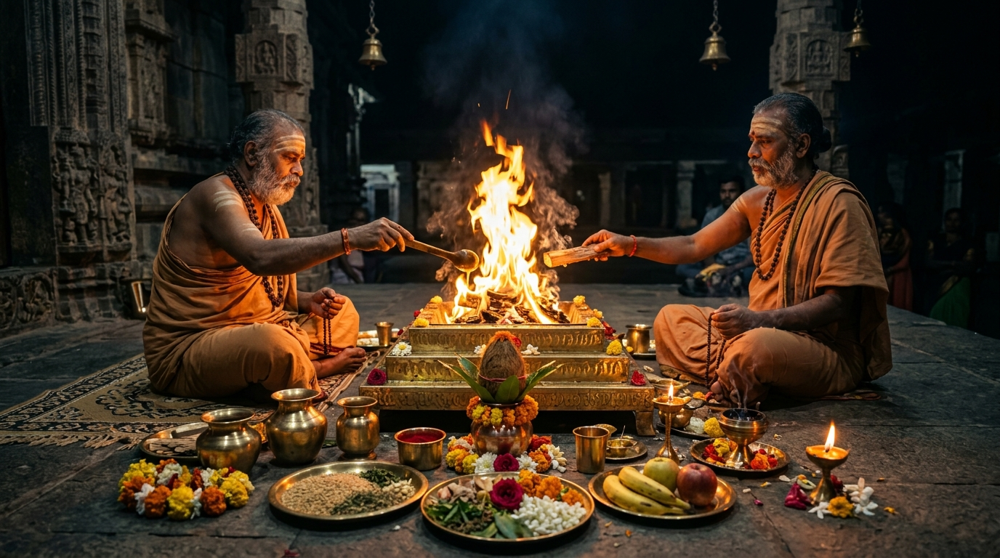
Vedic Homam & Yajna Sanctification
Sacred fire ceremonies for planetary pacification and family prosperity.
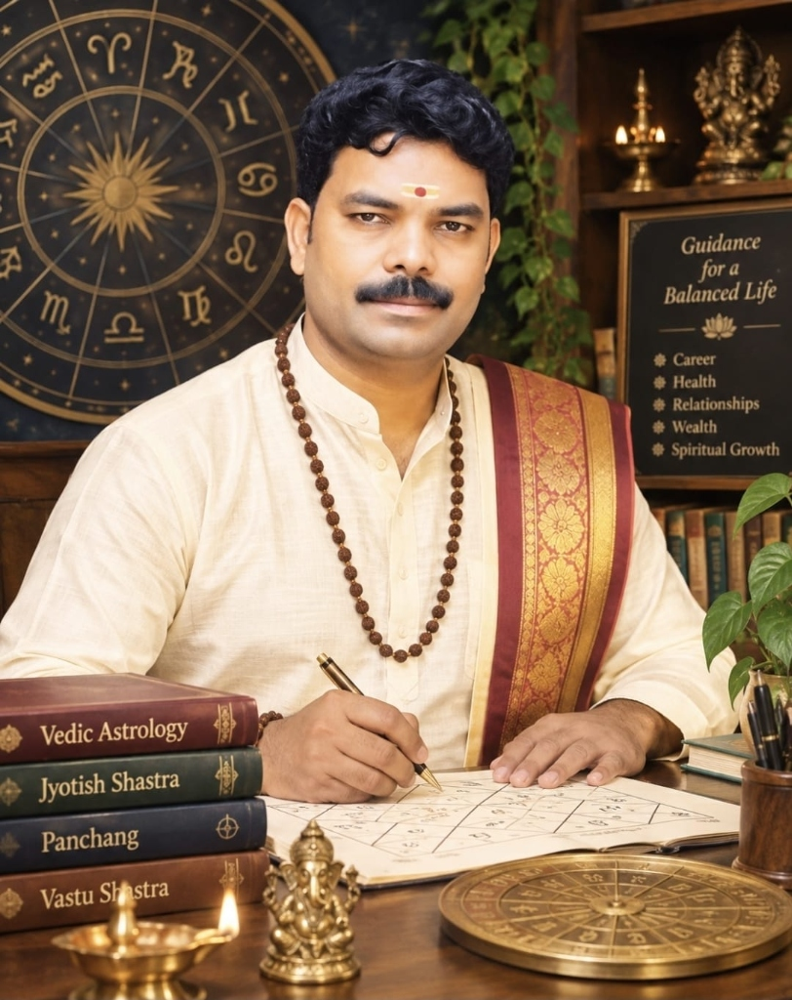
Personal Astrology Consultation
Traditional palm-leaf and horoscope readings at our Palnadu sanctum.
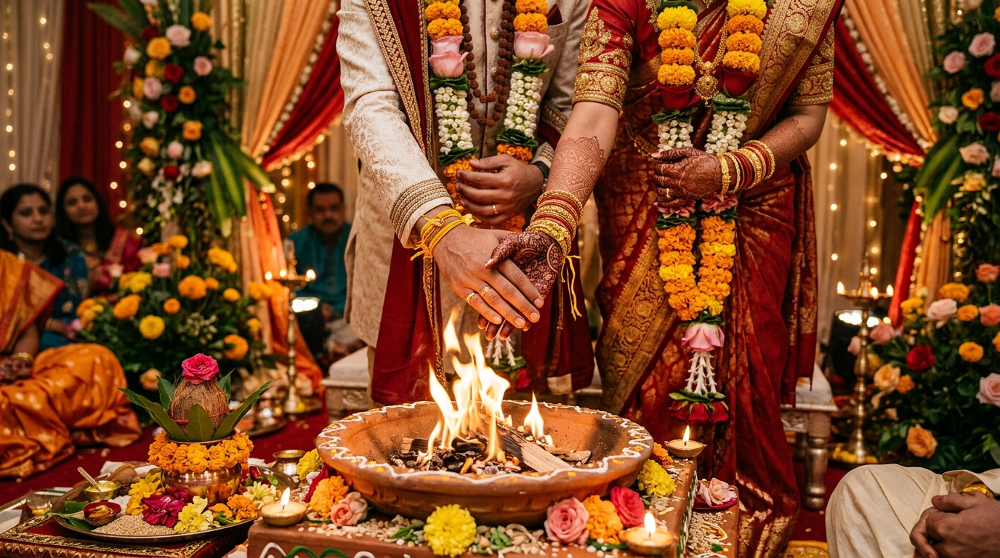
Vivaha Muhurtham & Matrimonial Blessing
Sanctified union through auspicious celestial alignments.